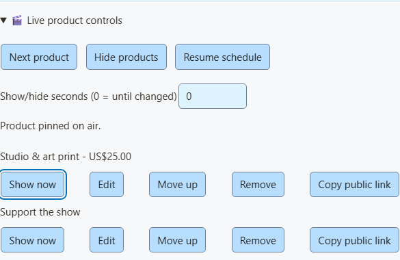
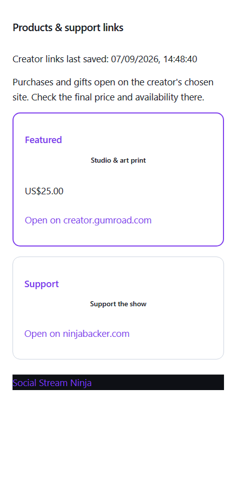

Live products and viewer links
Show a saved product on stream and give viewers a public link they can open on their phone.
1. Add a product or support link
Open Monetization > Products & support links > Set up products and links. Paste a public HTTPS link and choose Load details from link. Quick import supports public Gumroad, itch.io, Ko-fi, Buy Me a Coffee and Fourthwall pages. Custom domains, redirects, private pages and pages without public metadata may need manual entry. The existing Shopify and Fourthwall API import options remain available.
Check the title, image, price, currency and purpose. Quick import deliberately leaves the price blank. Choose Add product or link, enable Products & support links, then Save setup. No merchant account is needed for manual cards.
Shop, Gift, Support and Join describe the link's purpose. They do not change the classification of later payment events. Cards are saved snapshots; checkout is the source of truth for stock and prices.
2. Control what appears
Add the existing Products & support links overlay URL to OBS. Use Showcase or Support card for promotions, or Both to include activity alerts.
- Show now on a saved row pins that product and overrides the periodic card schedule.
- Next product pins the next saved product.
- Hide products hides promotional cards. Purchase and gift alerts continue.
- Resume schedule restores the saved first-product or rotation settings.
Set Show/hide seconds before using a control. Zero lasts until changed; 1?3600 restores the saved schedule after that many seconds. Live overrides reset when SSN restarts. Save list edits before using Show now. Controls identify a product by its exact saved URL, so moving it in the list does not break an automation.

3. Publish one viewer link
Open Display options > Public viewer page and choose Publish saved links. This explicitly publishes every saved product/support link, including titles, images, prices and purposes. Share Copy viewer link with your viewers. Product QR codes now use this stable page, so a viewer can still find a product after the overlay rotates.
Saved changes and live controls update the same URL. The viewer page checks for updates every 15 seconds and labels the featured product. It keeps the other links accessible when promotional cards are hidden. The last published catalog remains accessible while SSN is offline; the saved timestamp is shown, and featured means the last saved selection or rotation, not proof that the creator is live.
Unpublish removes the page; product QR codes return to individual product links. Open viewer pages clear within their next successful check. Previously shared URLs stop loading until you publish again. Publishing again from the same device restores the same URL. Keep the SSN device profile: its private publishing key is needed to update or remove the page.
If the API is unavailable, local controls still work. Failed updates leave the last published page visible and retry while SSN is open. The popup reports the failure. Publishing requires the optional public-shop service to be deployed; no store or payment account is involved.

Event Flow and remote controls
In Event Flow, add the Products & Support action from the overlay actions group. Select Show, Next, Hide or Resume; optionally set the exact saved product URL and seconds. Use an appropriate existing trigger, such as your own moderator command, rather than allowing every chat message to change products.
The existing authenticated session remote API accepts the same control:
{"action":"commerceControl","command":"show","url":"https://example.com/product","seconds":30}Commands are show, next, hide and resume. Omit URL to show the current/first product. Host controls must be enabled. Never share a private session/control URL with viewers; use the published viewer link.
These actions broadcast only the existing monetization_update display state. They do not create donations, purchases, chat posts or Event Flow payment triggers. Existing hasDonation behavior is unchanged.